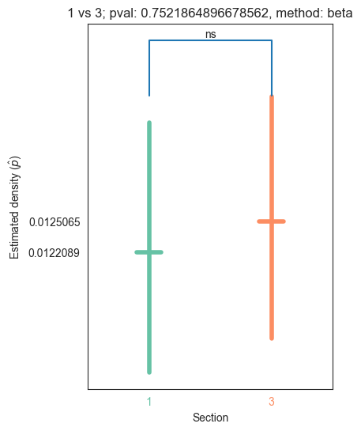
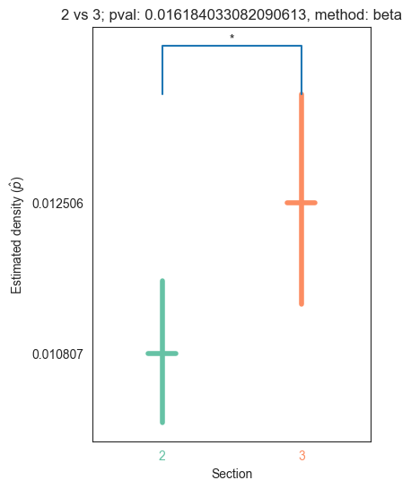
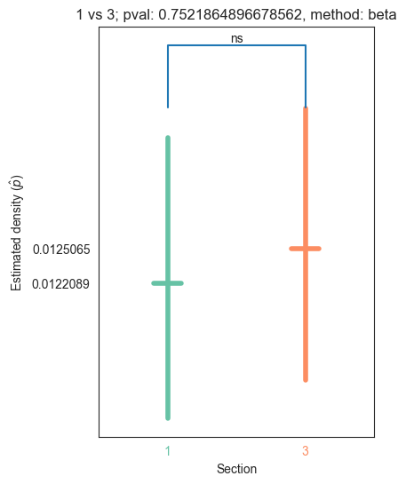
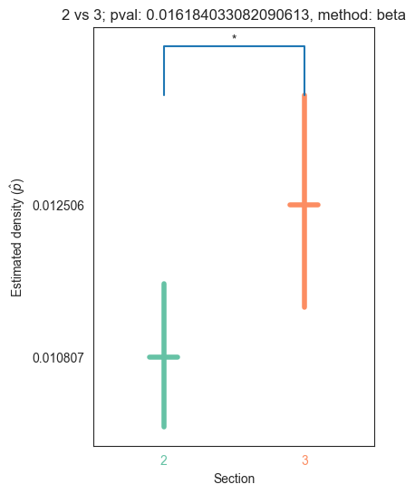

Density Tests
Density Tests#
In this notebook we will be getting densities of the adjacency matrices representing the neurons in different sections of the larva (hemispheres and segments). We will then test if there is any statistical significance between the densities across hemispheres/segments.
import os
import logging
import pandas as pd
import numpy as np
import itertools
import networkx as nx
import seaborn as sns
from itertools import chain, combinations
from upsetplot import plot
from matplotlib import pyplot as plt
from networkx import from_numpy_array, from_pandas_adjacency, number_of_nodes, number_of_edges, density
from graspologic.embed import AdjacencySpectralEmbed
from graspologic.layouts import layout_tsne, layout_umap
from graspologic.plot.plot import networkplot
from graspologic.utils import is_fully_connected, largest_connected_component, is_symmetric, symmetrize
from graspologic.inference import erdos_renyi_test
from graspologic.plot import adjplot, matrixplot
from statsmodels.stats.proportion import proportion_confint, multinomial_proportions_confint
from pkg.platy import _get_folder, load_connectome_normal_lcc_annotations, load_connectome_lcc_normal_adj, load_0_adj_labels, load_1_adj_labels, load_2_adj_labels, load_3_adj_labels, load_head_adj_labels, load_pygidium_adj_labels, load_left_adj_labels, load_right_adj_labels
left_adj, _ = load_left_adj_labels()
right_adj, _ = load_right_adj_labels()
head_adj, _ = load_head_adj_labels()
pyg_adj, _ = load_pygidium_adj_labels()
#adj_0, _ = load_0_adj_labels()
adj_1, _ = load_1_adj_labels()
adj_2, _ = load_2_adj_labels()
adj_3, _ = load_3_adj_labels()
hemi_adjs = [left_adj, right_adj]
segment_adjs = [head_adj, pyg_adj, adj_1, adj_2, adj_3]
"""
#convert to networkx to take densities
nx_hemis = []
for adj in hemi_adjs:
nx_hemis.append(from_pandas_adjacency(adj))
nx_segments = []
for adj in segment_adjs:
nx_segments.append(from_pandas_adjacency(adj))
"""
'\n#convert to networkx to take densities\nnx_hemis = []\nfor adj in hemi_adjs:\n nx_hemis.append(from_pandas_adjacency(adj))\n\nnx_segments = []\nfor adj in segment_adjs:\n nx_segments.append(from_pandas_adjacency(adj))\n'
annotations = load_connectome_normal_lcc_annotations()
annotations.head()
count = 0
for i in range(len(annotations["segment"])):
if annotations["segment"][i] == "1":
count += 1
count
357
Let us first import the annotations table that we made in the data_summary_v2.ipynb file
folder = _get_folder()
annotations = load_connectome_normal_lcc_annotations()
annotations = annotations.fillna("N/A")
connec_lcc_adj = load_connectome_lcc_normal_adj()
print(len(annotations))
print(len(connec_lcc_adj))
2530
2530
For the left and right hemispheres, we make a dictionary where the keys are the annotations "l" and "r" and the values are the skids that have the respective annotation
"""
hemi_skid_dict = {"l": [], "r": []}
hemi_list = list(annotations["side"])
skids_list = list(annotations["skids"])
for i in range(len(hemi_list)):
if hemi_list[i] == "N/A":
continue
if hemi_list[i] in hemi_skid_dict:
hemi_skid_dict[hemi_list[i]].append(str(skids_list[i]))
"""
'\nhemi_skid_dict = {"l": [], "r": []}\nhemi_list = list(annotations["side"])\nskids_list = list(annotations["skids"])\nfor i in range(len(hemi_list)):\n if hemi_list[i] == "N/A":\n continue\n \n if hemi_list[i] in hemi_skid_dict:\n hemi_skid_dict[hemi_list[i]].append(str(skids_list[i]))\n'
For the segments, we make another dictionary where the keys are the annotations "head" and "pygidium" and "0" and "1" and "2" and "3" and the values are the skids that have the respective annotation
"""
#use annotations to get skids for segments
segment_skid_dict = {"head": [], "pygidium": [], "0": [], "1": [], "2": [], "3": []}
segment_list = list(annotations["segment"])
skids_list = list(annotations["skids"])
for i in range(len(segment_list)):
if segment_list[i] == "N/A":
continue
if segment_list[i] in segment_skid_dict:
segment_skid_dict[segment_list[i]].append(str(skids_list[i]))
"""
'\n#use annotations to get skids for segments\nsegment_skid_dict = {"head": [], "pygidium": [], "0": [], "1": [], "2": [], "3": []}\nsegment_list = list(annotations["segment"])\nskids_list = list(annotations["skids"])\nfor i in range(len(segment_list)):\n if segment_list[i] == "N/A":\n continue\n \n if segment_list[i] in segment_skid_dict:\n segment_skid_dict[segment_list[i]].append(str(skids_list[i]))\n'
We now make respective adjacency matrices for the skids for each hemisphere
"""
#use for loops to avoid repetition
df_hemis = {"l": None, "r": None}
print(annotations.index)
for key in hemi_skid_dict:
df_hemis[key] = connec_lcc_adj.loc[hemi_skid_dict[key], hemi_skid_dict[key]]
"""
'\n#use for loops to avoid repetition\ndf_hemis = {"l": None, "r": None}\nprint(annotations.index)\nfor key in hemi_skid_dict:\n df_hemis[key] = connec_lcc_adj.loc[hemi_skid_dict[key], hemi_skid_dict[key]]\n'
We do the same here for the skids of the segments
"""
df_segments = {"head": None, "pygidium": None, "0": None, "1": None, "2": None, "3": None}
for key in segment_skid_dict:
df_segments[key] = connec_lcc_adj.loc[segment_skid_dict[key], segment_skid_dict[key]]
"""
'\ndf_segments = {"head": None, "pygidium": None, "0": None, "1": None, "2": None, "3": None}\nfor key in segment_skid_dict:\n df_segments[key] = connec_lcc_adj.loc[segment_skid_dict[key], segment_skid_dict[key]]\n'
#sort adjacency matrices into dicts
df_hemis = {"l": None, "r": None}
for i, key in enumerate(df_hemis):
df_hemis[key] = hemi_adjs[i]
df_segments = {"head": None, "pygidium": None, "1": None, "2": None, "3": None}
for i, key in enumerate(df_segments):
df_segments[key] = segment_adjs[i]
We convert the adjacency matrices to networkx objects so we can get the density of these graphs
nx_hemis = {"l": None, "r": None}
for key in df_hemis:
nx_hemis[key] = from_pandas_adjacency(df_hemis[key], create_using=nx.DiGraph)
nx_segments = {"head": None, "pygidium": None, "1": None, "2": None, "3": None}
for key in df_segments:
nx_segments[key] = from_pandas_adjacency(df_segments[key], create_using=nx.DiGraph)
We then get the densities of these networkx graphs
dens_hemis = {"l": None, "r": None}
for key in nx_hemis:
dens_hemis[key] = density(nx_hemis[key])
dens_segments = {"head": None, "pygidium": None, "1": None, "2": None, "3": None}
for key in nx_segments:
dens_segments[key] = density(nx_segments[key])
We concatenate the dicts so we can get a barplot of all the dictionaries we have
all_dicts = dens_hemis | dens_segments
labels = list(all_dicts.keys())
densities = list(all_dicts.values())
sns.set_style("white")
sns.barplot(x=labels, y=densities)
plt.title("Densities in different sections of the larva")
plt.xlabel("Section")
plt.ylabel("Density")
plt.savefig(folder / "densities_sections")

#pass in misc of the pairwise test, the labels of the
def plot_barplot(networks, labels, densities, coverage=0.95):
fig, ax = plt.subplots(figsize=(6, 6))
palette = None
#barplot features
ax.set_title("Densities in different sections of the larva")
if len(networks) == 2:
ax.set_xlabel("Side")
palette = sns.color_palette("Set1")
else:
ax.set_xlabel("Segment")
palette = sns.color_palette("Set2")
ax.set_ylabel("Density")
ax = sns.barplot(x=labels, y=densities, palette=palette)
if len(networks) == 2:
ax.set_xticklabels(["left", "right"])
#get possible number of edges, number of edges
possible_edges = []
num_edges = []
for i, network in enumerate(networks.values()):
#possible edges
n = np.shape(network)[0]
n_possible = n * (n-1)
possible_edges.append(n_possible)
#number of edges
num_edges.append(np.count_nonzero(network))
#upper and lower bound for each network
bounds = []
for poss, num in zip(possible_edges, num_edges):
lower, upper = proportion_confint(num, poss, alpha=1-coverage, method="beta")
bounds.append([lower, upper])
linewidth = 2
#plot confidence intervals
for x, bound in enumerate(bounds):
ax.plot([x, x], [bounds[x][0], bounds[x][1]], color="black", linewidth=linewidth)
#bar plot for dens_hemis with confidence intervals
hemi_labels = list(dens_hemis.keys())
hemi_densities = list(dens_hemis.values())
#run er test to get misc dict to plot confidence intervals
#convert pandas df to numpy
np_hemis = {"l": None, "r": None}
for key in df_hemis:
np_hemis[key] = df_hemis[key].to_numpy()
plot_barplot(np_hemis, hemi_labels, hemi_densities)
plt.savefig(folder / "densities_hemis")
#bar plot for dens_segments with confidence intervals
segment_labels = list(dens_segments.keys())
segment_densities = list(dens_segments.values())
#run er test to get misc dict to plot confidence intervals
#convert pandas df to numpy
np_segments = {"head": None, "pygidium": None, "1": None, "2": None, "3": None}
for key in df_segments:
np_segments[key] = df_segments[key].to_numpy()
plot_barplot(np_segments, segment_labels, segment_densities)
plt.savefig(folder / "densities_segments")
Let’s now run the test for the left and right hemisphere
#print p val of er test of left vs right
stats_hemis, pval_hemis, misc_hemis = erdos_renyi_test(np_hemis["l"], np_hemis["r"])
print(pval_hemis)
0.3636771840698877
We see that the pvalue is very small, which means that we reject the null hypothesis that the edge probability for the adj of the left hemisphere is not different from the edge probability of the adj of the right hemisphere
#6 by 6 df of pvals of the segments
labels_segments = list(dens_segments.keys())
adj_list = list(np_segments.values())
#make pairwise combination list of all elements in list
pairwise_labels = list(itertools.combinations(labels_segments, 2))
pairwise_adjs = list(itertools.combinations(adj_list, 2))
#initialize dataframe
names = ["head", "pygidium", "1", "2", "3"]
zero_data = np.zeros(shape=(len(names), len(names)))
pval_df = pd.DataFrame(zero_data, columns=names, index=names)
misc_df = pd.DataFrame(zero_data, columns=names, index=names)
pval_list = []
for label, adjs in zip(pairwise_labels, pairwise_adjs):
stat, pval, misc = erdos_renyi_test(adjs[0], adjs[1])
pval_df[label[0]][label[1]] = pval
pval_df[label[1]][label[0]] = pval
misc_df[label[0]][label[1]] = misc
misc_df[label[1]][label[0]] = misc
pval_df.to_csv(folder / "er_pvals_segments.csv")
pval_df
#make heatmap (p vals for sbm test as example in bilat symmetry)
#use upper triangle
/var/folders/25/jsfr4z_n287567y95vp2zgn40000gn/T/ipykernel_19737/2980723623.py:20: SettingWithCopyWarning:
A value is trying to be set on a copy of a slice from a DataFrame
See the caveats in the documentation: https://pandas.pydata.org/pandas-docs/stable/user_guide/indexing.html#returning-a-view-versus-a-copy
misc_df[label[1]][label[0]] = misc
/var/folders/25/jsfr4z_n287567y95vp2zgn40000gn/T/ipykernel_19737/2980723623.py:20: SettingWithCopyWarning:
A value is trying to be set on a copy of a slice from a DataFrame
See the caveats in the documentation: https://pandas.pydata.org/pandas-docs/stable/user_guide/indexing.html#returning-a-view-versus-a-copy
misc_df[label[1]][label[0]] = misc
/var/folders/25/jsfr4z_n287567y95vp2zgn40000gn/T/ipykernel_19737/2980723623.py:20: SettingWithCopyWarning:
A value is trying to be set on a copy of a slice from a DataFrame
See the caveats in the documentation: https://pandas.pydata.org/pandas-docs/stable/user_guide/indexing.html#returning-a-view-versus-a-copy
misc_df[label[1]][label[0]] = misc
/var/folders/25/jsfr4z_n287567y95vp2zgn40000gn/T/ipykernel_19737/2980723623.py:20: SettingWithCopyWarning:
A value is trying to be set on a copy of a slice from a DataFrame
See the caveats in the documentation: https://pandas.pydata.org/pandas-docs/stable/user_guide/indexing.html#returning-a-view-versus-a-copy
misc_df[label[1]][label[0]] = misc
| head | pygidium | 1 | 2 | 3 | |
|---|---|---|---|---|---|
| head | 0.000000e+00 | 5.854456e-66 | 1.171033e-27 | 1.887655e-31 | 1.345810e-32 |
| pygidium | 5.854456e-66 | 0.000000e+00 | 1.022672e-31 | 6.541884e-39 | 3.457583e-31 |
| 1 | 1.171033e-27 | 1.022672e-31 | 0.000000e+00 | 5.238621e-02 | 7.521865e-01 |
| 2 | 1.887655e-31 | 6.541884e-39 | 5.238621e-02 | 0.000000e+00 | 1.618403e-02 |
| 3 | 1.345810e-32 | 3.457583e-31 | 7.521865e-01 | 1.618403e-02 | 0.000000e+00 |
from matplotlib.transforms import Bbox
def shrink_axis(ax, scale=0.7, shift=0):
pos = ax.get_position()
mid = (pos.ymax + pos.ymin) / 2
height = pos.ymax - pos.ymin
new_pos = Bbox(
[
[pos.xmin, mid - scale * 0.5 * height - shift],
[pos.xmax, mid + scale * 0.5 * height - shift],
]
)
ax.set_position(new_pos)
from seaborn.utils import relative_luminance
def plot_pvals_v2(pval_df, names, multiple_correct=True, ax=None):
if ax is None:
width_ratios = [0.5, 3, 10]
fig, axs = plt.subplots(
1,
3,
figsize=(10, 10),
gridspec_kw=dict(
width_ratios=width_ratios,
),
)
axs[1].remove()
ax = axs[-1]
cax = axs[0]
plot_pvalues = np.log10(pval_df)
plot_pvalues.replace(-np.inf, 0, inplace=True)
im = sns.heatmap(
plot_pvalues,
ax=ax,
cmap="RdBu",
center=0,
square=True,
cbar=False,
fmt="s",
)
ax.set(ylabel="Source group", xlabel="Target group")
if multiple_correct == True:
ax.set(title="Density tests p-values segments (corrected)")
else:
ax.set(title="Density tests p-values segments (uncorrected)")
ax.set(xticks=np.arange(len(names)) + 0.5, xticklabels=names)
colors = im.get_children()[0].get_facecolors()
shrink_axis(cax, scale=0.5, shift=0.05)
fig = ax.get_figure()
_ = fig.colorbar(
im.get_children()[0],
cax=cax,
fraction=1,
shrink=1,
ticklocation="left",
)
cax.set_title(r"$log_{10}$" + "\ncorrected" "\np-value", pad=20)
cax.plot(
[0, 1], [np.log10(0.05), np.log10(0.05)], zorder=100, color="black", linewidth=3
)
cax.annotate(
r"$\alpha$",
(0.05, np.log10(0.05)),
xytext=(-5, 0),
textcoords="offset points",
va="center",
ha="right",
arrowprops={"arrowstyle": "-", "linewidth": 3, "relpos": (0, 0.5)},
)
#make X's
pad=0.2
for idx, color in enumerate(colors):
i, j = np.unravel_index(idx, (len(names), len(names)))
#print(pval_df[names[i]][names[j]])
if np.log(pval_df[names[i]][names[j]]) < np.log(0.05) and i!=j:
lum = relative_luminance(color)
text_color = ".15" if lum > 0.408 else "w"
xs = [j + pad, j + 1 - pad]
ys = [i + pad, i + 1 - pad]
ax.plot(xs, ys, color=text_color, linewidth=4)
xs = [j + 1 - pad, j + pad]
ys = [i + pad, i + 1 - pad]
ax.plot(xs, ys, color=text_color, linewidth=4)
#print(np.log(0.05))
plot_pvals_v2(pval_df, names, multiple_correct=False)
/Users/kareefullah/Library/Caches/pypoetry/virtualenvs/platy-data-EVeqgmAk-py3.9/lib/python3.9/site-packages/pandas/core/internals/blocks.py:351: RuntimeWarning: divide by zero encountered in log10
result = func(self.values, **kwargs)
/var/folders/25/jsfr4z_n287567y95vp2zgn40000gn/T/ipykernel_19737/4091286456.py:67: RuntimeWarning: divide by zero encountered in log
if np.log(pval_df[names[i]][names[j]]) < np.log(0.05) and i!=j:

from statsmodels.stats.multitest import multipletests
np_pvals_hemis = pval_hemis
corrected_pval_hemi = multipletests(pval_hemis)[1]
corrected_pval_hemi
array([0.36367718])
#bonferroni correction for pvals
from statsmodels.stats.multitest import multipletests
np_pvals = pval_df.to_numpy().flatten()
corrected_pvals = multipletests(np_pvals)[1].reshape((len(names), len(names)))
corrected_pvals_df = pd.DataFrame(corrected_pvals, columns=names, index=names)
corrected_pvals_df.to_csv(folder / "er_corrected_pvals_segments.csv")
#heatmap of corrected pvals (use rest of code)
bool_mat = np.triu(np.ones(corrected_pvals_df.shape), k=0).astype(bool)[0:len(corrected_pvals_df),0:len(corrected_pvals_df)]
sns.heatmap(np.log10(corrected_pvals_df), cmap="RdBu", mask=bool_mat, center=0)
plt.title("Heatmap of corrected log pvals of ER tests across segments")
plt.savefig(folder / "corrected_ER_test_heatmap.png")
/Users/kareefullah/Library/Caches/pypoetry/virtualenvs/platy-data-EVeqgmAk-py3.9/lib/python3.9/site-packages/pandas/core/internals/blocks.py:351: RuntimeWarning: divide by zero encountered in log10
result = func(self.values, **kwargs)
plot_pvals_v2(corrected_pvals_df, names, multiple_correct=True)
/var/folders/25/jsfr4z_n287567y95vp2zgn40000gn/T/ipykernel_19737/4091286456.py:67: RuntimeWarning: divide by zero encountered in log
if np.log(pval_df[names[i]][names[j]]) < np.log(0.05) and i!=j:
N=50
meta = pd.DataFrame(
data={
'hemisphere': np.concatenate((np.full((1, 2*N), 0), np.full((1, 2*N), 1)), axis=1).flatten(),
'region': np.concatenate((np.full((1, N), 0), np.full((1, N), 1), np.full((1, N), 0), np.full((1, N), 1)), axis=1).flatten(),
'cell_size': np.arange(4*N)},
)
meta
| hemisphere | region | cell_size | |
|---|---|---|---|
| 0 | 0 | 0 | 0 |
| 1 | 0 | 0 | 1 |
| 2 | 0 | 0 | 2 |
| 3 | 0 | 0 | 3 |
| 4 | 0 | 0 | 4 |
| ... | ... | ... | ... |
| 195 | 1 | 1 | 195 |
| 196 | 1 | 1 | 196 |
| 197 | 1 | 1 | 197 |
| 198 | 1 | 1 | 198 |
| 199 | 1 | 1 | 199 |
200 rows × 3 columns
corrected_pvals_df < 0.05
| head | pygidium | 1 | 2 | 3 | |
|---|---|---|---|---|---|
| head | True | True | True | True | True |
| pygidium | True | True | True | True | True |
| 1 | True | True | True | False | False |
| 2 | True | True | False | True | False |
| 3 | True | True | False | False | True |
The following methods will allow us to plot the density of the sections that we are interested in, as well as the pvalue after running the erdos_renyi_test
def convert_pvalue_to_asterisks(pvalue):
if pvalue <= 0.0001:
return "****"
elif pvalue <= 0.001:
return "***"
elif pvalue <= 0.01:
return "**"
elif pvalue <= 0.05:
return "*"
return "ns"
def plot_density_bin(pval, label1, label2, misc, method="beta", ax=None, coverage=0.95):
if ax is None:
fig, ax = plt.subplots(1, 1, figsize=(4, 6))
n_possible_first = misc["possible1"]
n_possible_second = misc["possible2"]
density_first = misc["probability1"]
density_second = misc["probability2"]
n_edges_first = misc["observed1"]
n_edges_second = misc["observed2"]
first_lower, first_upper = proportion_confint(
n_edges_first, n_possible_first, alpha=1 - coverage, method=method
)
second_lower, second_upper = proportion_confint(
n_edges_second, n_possible_second, alpha=1 - coverage, method=method
)
halfwidth = 0.1
linewidth = 4
colors = sns.color_palette("Set2")
palette = dict(zip([label1, label2], [colors[0], colors[1]]))
color = palette[label1]
x = 0
ax.plot(
[x - halfwidth, x + halfwidth],
[density_first, density_first],
color=color,
linewidth=linewidth,
)
ax.plot([x, x], [first_lower, first_upper], color=color, linewidth=linewidth)
color = palette[label2]
x = 1
ax.plot(
[x - halfwidth, x + halfwidth],
[density_second, density_second],
color=color,
linewidth=linewidth,
)
ax.plot([x, x], [second_lower, second_upper], color=color, linewidth=linewidth)
#yticks = [np.round(density_left, 4), np.round(density_right, 4)]
yticks = [density_first, density_second]
ax.set(
xlabel="Section",
xticks=[0, 1],
xticklabels=[label1, label2],
xlim=(-0.5, 1.5),
yticks=yticks,
# ylim=(0, max(right_upper, left_upper) * 1.05),
ylabel=r"Estimated density ($\hat{p}$)",
title="{} vs {}; pval: {}, method: {}".format(label1, label2, pval, method)
)
scale = 0.04
line_shift = 0.000005
max_upper = max(first_upper, second_upper)
line_start = max_upper + line_shift
y_shift = max_upper * scale
ax.plot([label1, label1, label2, label2], [max_upper+line_shift, max_upper+y_shift, max_upper+y_shift, max_upper+line_shift])
text = convert_pvalue_to_asterisks(pval)
x_text = 0.5
y_text = max_upper+y_shift
ax.text(x_text, y_text, text, ha='center', va='bottom')
labels = ax.get_xticklabels()
for label in labels:
text_string = label.get_text()
label.set_color(palette[text_string])
return ax.get_figure(), ax
We plot the densities for adjs of the left and right hemisphere
plot_density_bin(pval_hemis, list(np_hemis.keys())[0], list(np_hemis.keys())[1], misc_hemis, method="beta")
plt.savefig(folder / "density_plots/{} vs {}".format("left", "right"), bbox_inches='tight')
To make comparisons for the segments, we will make two lists: one that has every pairwise combination of the segment names and the other of the pairwise combination of the respective adjs
keys = list(np_segments.keys())
vals = list(np_segments[key] for key in keys)
keys = list(itertools.combinations(keys, 2))
vals = list(itertools.combinations(vals, 2))
We plot the densities of all the pairwise combinations of segments, and note that segment 1 vs 3 is the only test that yields a non-significant p-value, which indicates that we fail to reject the null hypothesis that segment 1 and 3 have the same network density
for pair_key, pair_val in zip(keys, vals):
stat, pval, misc = erdos_renyi_test(pair_val[0], pair_val[1])
plot_density_bin(pval, pair_key[0], pair_key[1], misc)
plt.savefig(folder / "density_plots" / "{} vs {}".format(pair_key[0], pair_key[1]), bbox_inches='tight')
 


